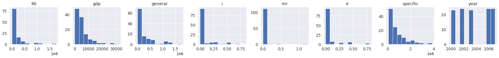

#code adapted from https://github.com/thomasjpfan/ml-workshop-introimport seaborn as sns
import sklearn
sns.set_theme(context="notebook", font_scale=1.2,
rc={"figure.figsize": [10, 6]})
sklearn.set_config(display="diagram")import pandas as pd
url = 'https://raw.githubusercontent.com/davidrkearney/Kearney_Data_Science/master/_notebooks/df_panel_fix.csv'
df = pd.read_csv(url, error_bad_lines=False)
df| Unnamed: 0 | province | specific | general | year | gdp | fdi | rnr | rr | i | fr | reg | it | |
|---|---|---|---|---|---|---|---|---|---|---|---|---|---|
| 0 | 0 | Anhui | 147002.0 | NaN | 1996 | 2093.30 | 50661 | 0.000000 | 0.000000 | 0.000000 | 1128873 | East China | 631930 |
| 1 | 1 | Anhui | 151981.0 | NaN | 1997 | 2347.32 | 43443 | 0.000000 | 0.000000 | 0.000000 | 1356287 | East China | 657860 |
| 2 | 2 | Anhui | 174930.0 | NaN | 1998 | 2542.96 | 27673 | 0.000000 | 0.000000 | 0.000000 | 1518236 | East China | 889463 |
| 3 | 3 | Anhui | 285324.0 | NaN | 1999 | 2712.34 | 26131 | NaN | NaN | NaN | 1646891 | East China | 1227364 |
| 4 | 4 | Anhui | 195580.0 | 32100.0 | 2000 | 2902.09 | 31847 | 0.000000 | 0.000000 | 0.000000 | 1601508 | East China | 1499110 |
| ... | ... | ... | ... | ... | ... | ... | ... | ... | ... | ... | ... | ... | ... |
| 355 | 355 | Zhejiang | 391292.0 | 260313.0 | 2003 | 9705.02 | 498055 | 1.214286 | 0.035714 | 0.035714 | 6217715 | East China | 2261631 |
| 356 | 356 | Zhejiang | 656175.0 | 276652.0 | 2004 | 11648.70 | 668128 | 1.214286 | 0.035714 | 0.035714 | NaN | East China | 3162299 |
| 357 | 357 | Zhejiang | 656175.0 | NaN | 2005 | 13417.68 | 772000 | 1.214286 | 0.035714 | 0.035714 | NaN | East China | 2370200 |
| 358 | 358 | Zhejiang | 1017303.0 | 394795.0 | 2006 | 15718.47 | 888935 | 1.214286 | 0.035714 | 0.035714 | 11537149 | East China | 2553268 |
| 359 | 359 | Zhejiang | 844647.0 | 0.0 | 2007 | 18753.73 | 1036576 | 0.047619 | 0.000000 | 0.000000 | 16494981 | East China | 2939778 |
360 rows × 13 columns
import pandas as pd
import sklearn
from sklearn.datasets import fetch_openml
from sklearn.model_selection import train_test_split
df=df.dropna()
df.isnull().sum()
df.columns
sklearn.set_config(display='diagram')
X, y = df.drop(['it', 'Unnamed: 0'], axis = 1), df['it']
X = X.select_dtypes(include='number')
X
_ = X.hist(figsize=(30, 15), layout=(5, 8))
url = 'https://raw.githubusercontent.com/davidrkearney/colab-notebooks/main/datasets/strokes_training.csv'
df = pd.read_csv(url, error_bad_lines=False)
df
df=df.dropna()
df.isnull().sum()
df.columns
sklearn.set_config(display='diagram')
X, y = df.drop(['stroke', 'id'], axis = 1), df['stroke']
X = X.select_dtypes(include='number')
X
X_train, X_test, y_train, y_test = train_test_split(X, y, random_state=42, stratify=y)Train DummyClassifer
from sklearn.dummy import DummyClassifier
dc = DummyClassifier(strategy='prior').fit(X_train, y_train)
dc.score(X_test, y_test)0.9811502476609797Train KNN based model
from sklearn.preprocessing import StandardScaler
from sklearn.pipeline import make_pipeline
from sklearn.neighbors import KNeighborsClassifier
knc = make_pipeline(
StandardScaler(),
KNeighborsClassifier()
)
knc.fit(X_train, y_train)Pipeline(steps=[('standardscaler', StandardScaler()),
('kneighborsclassifier', KNeighborsClassifier())])StandardScaler()
KNeighborsClassifier()
knc.score(X_test, y_test)0.9801871216290589# %load solutions/00-ex01-solutions.py
from sklearn.datasets import load_breast_cancer
cancer = load_breast_cancer(as_frame=True)
X, y = cancer.data, cancer.target
y.value_counts()
X_train, X_test, y_train, y_test = train_test_split(
X, y, random_state=42, stratify=y)
from sklearn.linear_model import LogisticRegression
log_reg = make_pipeline(
StandardScaler(),
LogisticRegression()
)
log_reg.fit(X_train, y_train)
log_reg.score(X_test, y_test)
from sklearn.metrics import f1_score
y_pred = log_reg.predict(X_test)
y_pred
f1_score(y_test, y_pred)0.9888888888888889